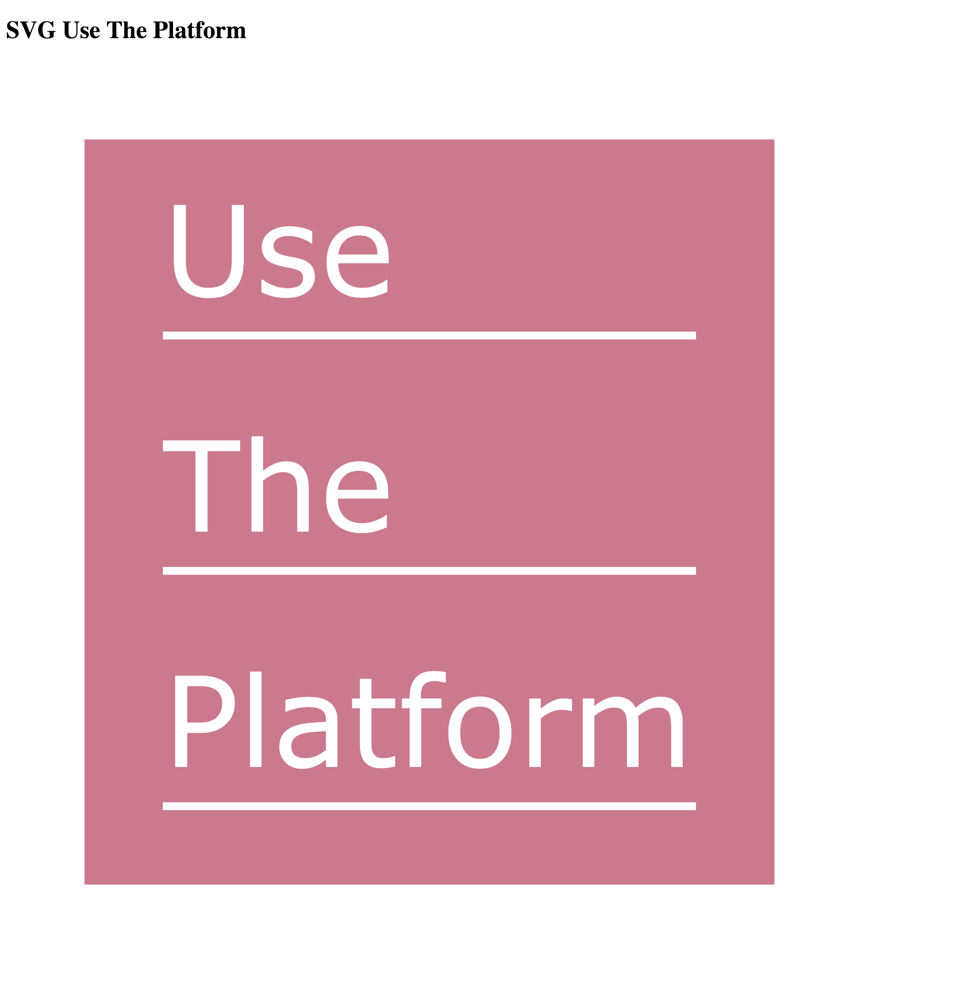
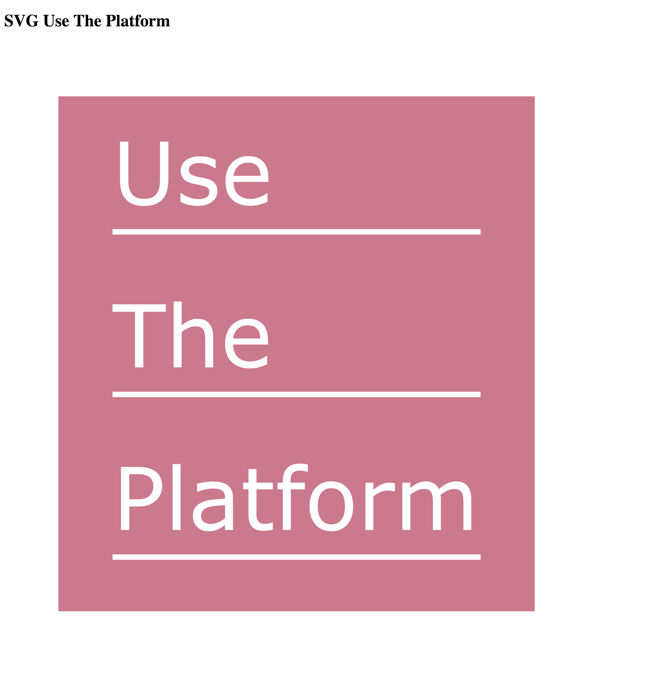

8. SVG
Inhalt:
Lernziele:
Literatur:
Mögliche Klausuraufgaben:
- Konzepte von Scalable Vector Graphics (SVG) beschreiben können.
- Eigene SVG-Grafiken von Hand implementieren können.
- SVG-Grafiken animieren können.
- SVG-Grafiken mit Interaktion versehen können.
- ES6 import programmieren können.
- Transformationen, Transitionen und Animationen in CSS schreiben können.
- SVG-Apps mit LitElement implementieren können.
- Arbeiten Sie das W3Schools SVG Tutorialdurch.
- Lesen Sie W3Schools CSS-2D-Transformationenund führen Sie alle Exercises am Ende der Seite durch.
- Lesen Sie W3Schools CSS-Transitionenund führen Sie alle Exercises am Ende der Seite durch.
- Lesen Sie W3Schools CSS-Animatiound führen Sie alle Exercises am Ende der Seite durch.
- selfhtml on SVG
- SVG Icons
- Jenkov Aps Tutorial on SVG
- mediaevent on SVG
- tutorialspoint on SVG
- A Primer on Bézier Curves
- Nennen Sie die 7 wichtigsten SVG-Elemente und geben Sie je ein Beispiel.
- Wie kann man SVG in HTML einbinden? Welche Möglichkeiten sind mit den verschiedenen Einbindungen verbunden? Geben Sie eine Tabelle mit allen Einbindungen und Einschränkungen an und begründen Sie, warum der Standard welche Einschränkungen an welcher Stelle vorsieht.
- Arbeiten Sie das W3Schools SVG Tutorial durch.
- Lesen Sie W3Schools CSS-2D-Transformationen und führen Sie alle Exercises am Ende der Seite durch.
- Lesen Sie W3Schools CSS-Transitionen und führen Sie alle Exercises am Ende der Seite durch.
- Lesen Sie W3Schools CSS-Animation und führen Sie alle Exercises am Ende der Seite durch.
Codieren Sie eine HTML-Datei mit Inline SVG, so dass sich folgendes Aussehen ergibt:

Fügen Sie als Hover-Effekt eine CSS-Animation hinzu, die die Größe der SVG-Grafik verdoppelt, wenn man mit dem Cursor über die Grafik geht.

Fügen Sie als Hover-Effekt eine CSS-Animation hinzu, die die Größe der SVG-Grafik verdoppelt, wenn man mit dem Cursor über die Grafik geht.
Implementieren Sie ein Balkendiagramm mit Inline SVG und LitElement. Geben Sie die Daten für das Balkendiagramm im JSON-Format vor. Animieren Sie die Grafik wie z.B. in Bar Chart.
Schreiben Sie mit SVG und LitElement ein Animationswerkzeug für Bezierkurven, wie unter §1 - A lightning introduction vorgegeben.